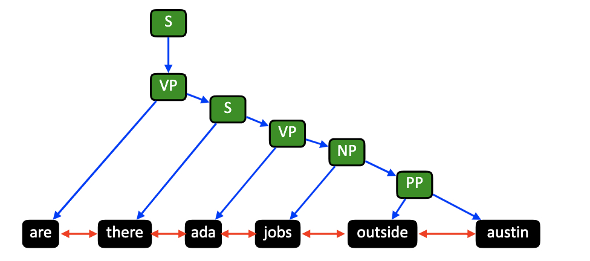

Constituency Graph Construction¶
The constituency graph is a widely used static graph that is able to capture phrase-based syntactic relations in a sentence. Constituency parsing models the assembly of one or several corresponded words (i.e., phrase level). Thus it provides new insight into the grammatical structure of a sentence. Specifically, we could devide the graph construction process into following several steps:
Parsing. For each sentence in the input paragraph, we use an external parser like CoreNLP to perform constituency parsing on it.
Sub-graph construction. With constituency parsing trees from 1), we construct a subgraph for each sentence.
Graph merging. We merge subgraphs into a final constituency graph.
For example, we can construct the constituency graph given a raw textual input:
How to use¶
from graph4nlp.pytorch.modules.graph_construction.constituency_graph_construction import ConstituencyBasedGraphConstruction
from stanfordcorenlp import StanfordCoreNLP
raw_data = "James went to the corner-shop. And bought some eggs."
nlp_parser = StanfordCoreNLP('http://localhost', port=9000, timeout=300000)
processor_args = {
'annotators': 'tokenize,ssplit,pos,parse',
"tokenize.options":
"splitHyphenated=false,normalizeParentheses=false,normalizeOtherBrackets=false",
"tokenize.whitespace": True,
'ssplit.isOneSentence': False,
'outputFormat': 'json'
}
graphdata = ConstituencyBasedGraphConstruction.topology(raw_data, nlp_parser, processor_args=processor_args, merge_strategy=None, edge_strategy=None, verbase=True)
The figure below is an example for generated constituency graph.
{kind=link}
Implementation details¶
Parsing¶
We use CoreNLP as our parser and load the constituency parsing results in json format.
def parsing(cls, raw_text_data, nlp_processor, processor_args):
output = nlp_processor.annotate(raw_text_data.strip().replace('(', '<LB>').replace(')', '<RB>'), properties=processor_args)
if CORENLP_TIMEOUT_SIGNATURE in output:
raise TimeoutError('CoreNLP timed out at input: \n{}\n This item will be skipped. '
'Please check the input or change the timeout threshold.'.format(raw_text_data))
parsed_output = json.loads(output)['sentences']
return parsed_output
Sub-graph construction¶
For subgraph construction of each sentence, we provide two operations: adding sequential links and constituency graph pruning. Instructions of them are as follows,
Sequential Link¶
We provide an option to add no/unidirectional/bidirectional edges between word nodes and nodes connecting two sub-graphs.
sequential_link=0. Do not add sequential links.sequential_link=1. Add unidirectional links.sequential_link=2. Add bidirectional links.sequential_link=3. Do not add sequential links inside each sentence; but add bidirectional links between adjacent sentences.
Prune¶
The hierarchical structure of constituency graph is complicated, we, therefore, provide some pruning options as follows (ROOT node are pruned by default),
prune=0. No pruning.prune=1. Prune pos (part-of-speech) nodes.prune=2. Prune nodes with both in-degree and out-degree of 1.
For example, function below is used to prune nodes when prune = 2.
def _cut_line_node(cls, input_graph: GraphData):
idx_to_be_deleted = []
new_edges = []
for idx, n in enumerate(input_graph.node_attributes):
edge_arr = input_graph.get_all_edges()
cnt_in = 0
cnt_out = 0
for e in edge_arr:
if idx == e[0]:
cnt_out += 1
out_ = e[1]
if idx == e[1]:
cnt_in += 1
in_ = e[0]
if cnt_in == 1 and cnt_out == 1:
idx_to_be_deleted.append(idx)
new_edges.append((in_, out_))
if len(idx_to_be_deleted) == 0:
return input_graph
res_graph = GraphData()
id_map = {}
cnt_node = 0
for idx, n in enumerate(input_graph.node_attributes):
if idx not in idx_to_be_deleted:
res_graph.add_nodes(1)
res_graph.node_attributes[res_graph.get_node_num()-1] = n
id_map[idx] = cnt_node
cnt_node += 1
else:
id_map[idx] = -1
for edge_arr in input_graph.get_all_edges()+new_edges:
if (edge_arr[0] not in idx_to_be_deleted) and (edge_arr[1] not in idx_to_be_deleted):
res_graph.add_edge(id_map[edge_arr[0]], id_map[edge_arr[1]])
return res_graph
Graph merging¶
Since the constituency graph is only constructed for sentences individually, we provide options to construct one graph for the paragraph consisting of multiple sentences. Currently, we support the following options:
tailhead. It means we will link the tail node of \({i-1}^{th}\) sentence’s graph with the head node of \(i^{th}\) sentence’s graph.user_define. We suggest users to define their merge strategy by overriding the_graph_connectas follows:
from graph4nlp.pytorch.modules.graph_construction.constituency_graph_construction import ConstituencyBasedGraphConstruction
class NewConstituencyGraphConstruction(ConstituencyBasedGraphConstruction):
def _graph_connect(cls, nx_graph_list, merge_strategy=None):
...